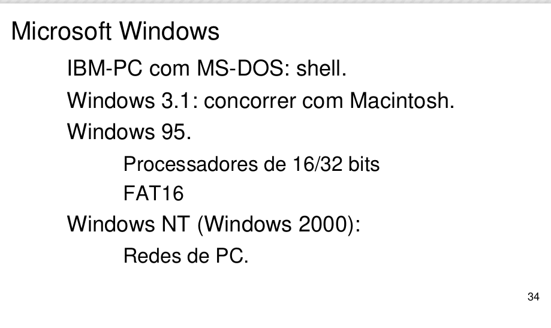
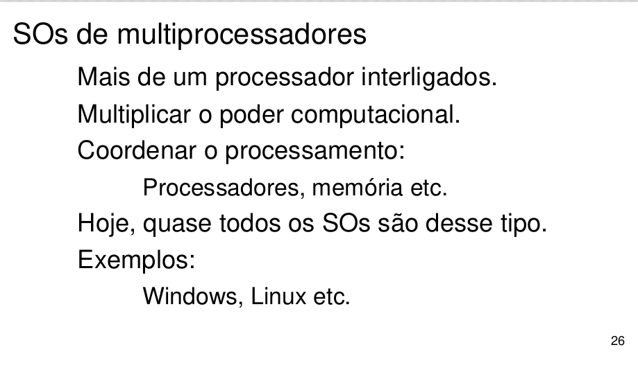

Objetivos de Aprendizagem
- Apresentar conceitos e tipos de sistemas operacionais.
- Apresentar os sistemas operacionais de maior uso e influência.
INTRODUÇÃO
PRINCIPAIS SISTEMAS OPERACIONAIS
MICROSOFT WINDOWS
A história do sistema operacional mais usado em todo o mundo se confunde com a história da Microsoft e do computador pessoal. Quando a IBM decidiu criar o IBM-PC ela precisava de um sistema operacional e para isto foram requisitados os serviços da pequena empresa, na época, chamada Microsoft. Até este momento a Microsoft nunca tinha desenvolvido um sistema operacional. Após receber o convite, o fundador da Microsoft, Bill Gates, entrou em contato com a Seattle Computer Products, criadora do sistema operacional DOS (disk operating system), e comprou a empresa, possibilitando o uso do DOS por parte da Microsof
Após a apresentação do DOS para os executivos da IBM, houve a necessidade de algumas modificações gerando a primeira versão do MS-DOS. Esta versão utilizava somente o modo shell. Com o passar dos anos, o sucesso do IBM-PC e do MS-DOS foi abalado devido ao lançamento promovido por Steve Jobs, fundador da Apple. Este lançou o computador chamado Apple Macintosh.
Este computador possuía uma interface gráfica e que era de fácil uso, mesmo por quem não tinha conhecimento avançado em informática. Além disto, possuía uma grande inovação que era o uso do mouse, uma ideia que Steve Jobs havia conhecido após uma visita a Xerox Parc.
Bill Gates e a Microsoft em resposta a Apple, em especial a Steve Jobs, cria o Microsoft Windows 3.1, permitindo o uso do mouse e interface gráfica para o usuário.
Em 24 de agosto de 1995, a Microsoft apresenta ao mundo o Windows 95. Este sistema operacional trabalhava a 16/32 bits e possuía um revolucionário sistema de arquivos (FAT16). Tornou-se líder de vendas pela facilidade em seu uso e colocou a Microsoft como uma das maiores empresas do mundo.
Além do Microsoft Windows 95, havia uma versão para computadores em redes chamada Microsoft Windows NT e futuramente seria chamada de Windows 2000.
Em 1998, foi lançada a versão Microsoft Windows 98, possuindo integração completa com a internet e com o sistema de arquivos FAT32. Além disto, permitia o uso de dispositivos de entrada/saída que utilizassem o conector USB. Além destas melhorias, a parte gráfica passou por reformulação.
Em uma tentativa frustrada de melhorar o Windows 98 e de unir as melhores práticas do Windows 2000, em especial o uso de sistema de arquivos NTFS (utilizado em redes), foi criado o Microsoft Windows Millenium. Mas este projeto não obteve o sucesso que o Windows 95 e 98 tiveram.
Em 25 de outubro de 2001 foi lançado o Windows XP e este sistema operacional tornou-se sucesso. Até hoje, ele representa entre 20% a 30% de usuários ativos. (http://gs.statcounter.com/#os-ww-monthly-201410-201510. Acesso em: 20 nov. 2015 às 16h30).
A tendência é que o Windows XP deixe de ser usado, pois três versões já o substituíram. Em primeiro, podemos citar o Windows Vista, que apresentou mudanças gráficas consideráveis, mas exigia uma quantidade considerável de hardware. Muitos usuários preferiram continuar com o Windows XP a migrar para o Windows Vista. Após uma série de mudanças, a Microsoft apresenta o Windows 7. Sua aceitação foi muito boa, tanto que representa mais de 50% dos sistemas operacionais utilizados. (http://gs.statcounter.com/#os-ww-monthly-201410-201510. Acesso em: 20 nov. 2015 às 16h30).
A necessidade de uma versão de sistema operacional integrado, que pudesse ser utilizado tanto em computadores pessoais, como os portáteis, netbooks e tablets, fez com que a Microsoft criasse o Windows 8. Este sistema operacional foi lançado mundialmente em 26 de outubro de 2012. A principal mudança percebida pelos usuários foi o uso de imagens maiores e uma tela com várias funcionalidades. Esta técnica de interface é chamada de METRO. Além da mudança na interface do usuário, foram modificadas uma série de recursos para melhor funcionamento do computador.
LINUX
O Linux é um sistema operacional baseado no Unix. A sua primeira versão foi conhecida em 1991 quando seu autor Linus Torvalds finalizou a programação da primeira versão. Este sistema operacional é muito utilizado em computadores de grande porte e servidores, devido à garantia de estabilidade e alta disponibilidade.
O Linux possui um kernel/núcleo que não pode ser comercializado e que possui todo código fonte disponível para personalizações. Ele é conhecido com um dos softwares mais importantes na cultura Open-Source. A cultura open-source prega que o software deve ser público e que os códigos-fontes estejam disponíveis para pesquisa e alteração.
Como o núcleo do sistema operacional é público, a possibilidade de implementações diversas é real, onde cada distribuição foca em algo em especial. Em certas distribuições o uso de interfaces gráficas não se faz necessário, como é o caso de distribuições como Slackware e Debian.
Em outras implementações, como a distribuição Linux, chamada Ubuntu, se faz necessário o uso de interface gráfica e para isto, além do núcleo, temos que utilizar a partição gráfica.
O Linux possui uma mascote que é um pinguim chamado Tux.
APPLE IOS
A Apple é uma empresa fundada por Steve Jobs e nos últimos anos boa partes dos lançamentos e de inovação que surgiram no mundo foram apresentadas nas conferências da Apple. O sistema operacional IOs concentra operações para tablet (Ipad) e smartphone (Iphone). Sua principal característica é a facilidade de uso revelada após testes com crianças de três anos. O IOs é um sistema operacional proprietário e só pode ser utilizado em aparelhos fabricados pela Apple.

ANDROID
O Android é uma resposta ao grande mercado de tecnologia e dispositivos mobiles. Ele é baseado na versão 2.6 do kernel do Linux e tem disputado a liderança entre os sistemas operacionais para dispositivos portáteis junto com o IOs.
Muitos pensam que o Google é o dono do Android. Na verdade, um grupo de empresas do mercado de telefonia é quem cuida do Android. Este grupo é chamado de Open Handset Alliance (OHA). Este grupo é liderado pelo Google, mas não torna esta empresa como única proprietária deste sistema operacional.
O Android possui uma máquina virtual chamada Dalvik que faz um papel parecido com a JVM do Java. A Oracle – atual proprietária do Java – acusa a Google de plágio na criação da Dalvik e tem movido uma série de processos para comprovar este possível plágio.
CONSIDERAÇÕES FINAIS
Entender os conceitos básicos e globais de sistemas operacionais é essencial para a sequência das próximas unidades.
Conseguir assimilar os conceitos que serão ministrados nas próximas unidades e realizar uma comparação com as gerações de computadores e tipos de sistemas operacionais será de vital importância para o entendimento dos itens a serem ministrados.
A partir da próxima unidade mergulharemos mais a fundo no conhecimento dos sistemas operacionais, não importando qual versão ou fabricante tenha desenvolvido.
Se prepare para conhecermos mais a fundo os conceitos sobre os sistemas operacionais, sobre processos e a comunicação entre eles.